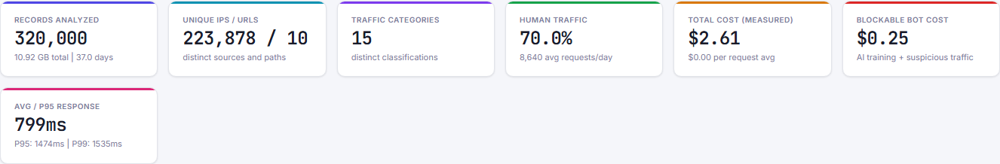

Log File & Bot Traffic Analyzer
Drop 1M-line logs → see GPTBot vs OAI-SearchBot cost split → copy Cloudflare rule. Free, private, $0 vs £99/yr Frog / €383/mo JetOctopus. 100% client-side — 🔒 no log leaves your machine (audit).
3.2M lines1.02GB streamed
6.6s read320k sampled 1-in-10
$2.61 total$0.25 blockable
127 sigstraining vs search vs user
UNVERIFIED GPTBot: top KPIspoof hunt built-in
JS-shell tableGEO render gap

Drop your log file here — stays on this device
or
📄 .log 📄 .jsonl 📄 .csv 🗜️ .gz — JSON array, JSONL/NDJSON, Apache Combined, Nginx, W3C Extended (#Fields), AWS ALB, Cloudflare Logpush. Multi-select rotations. Mobile: 50MB guard pre-drop. 500MB+ →
node tools/cli.js --exact (exact, no sampling).🔒 No upload — verified: no XHR/WebSocket/sendBeacon. Example:
no log file?